CAVELUX / MOTION ASSET LIBRARY
Built to move.
Three clear character states. Six scientific overlays.
Six movements. One original sonic world.
Reaction Pack 01 ↗ · Eight short loops. GIFs, MP4s, and transparent frame masters.
01 / The character
Resting, curious, friendly. Base PNG

Skills, MCPs, workflows. Base PNG

Continuously flowing spectrum. Base PNG

02 / The instrument panel


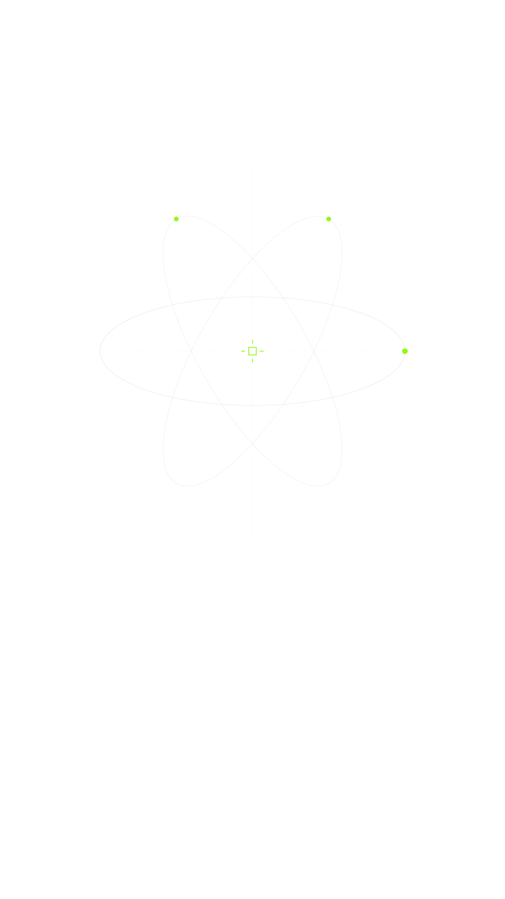

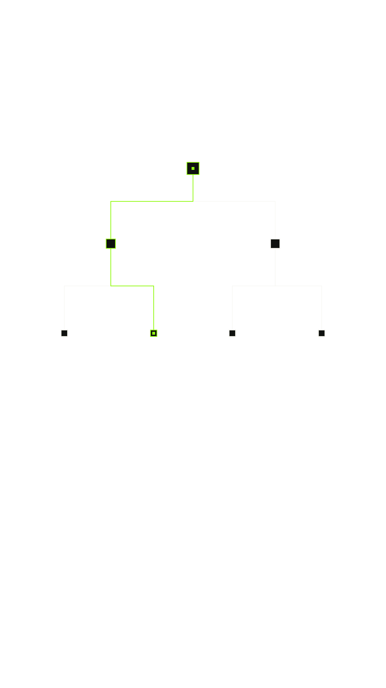

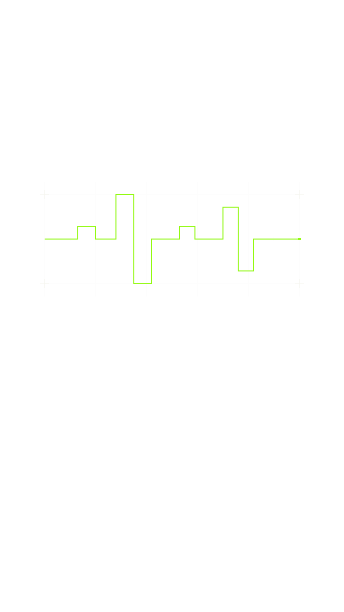


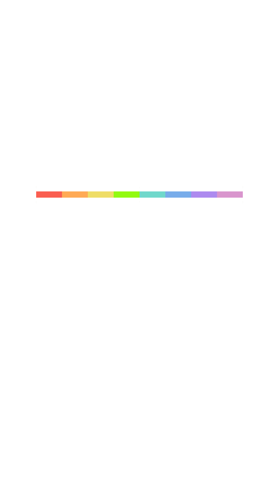
03 / The six movements
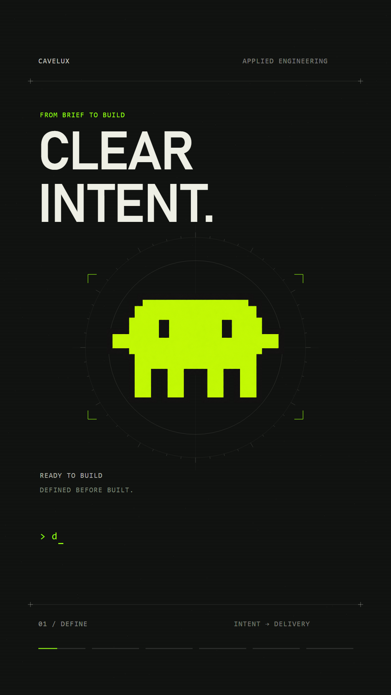
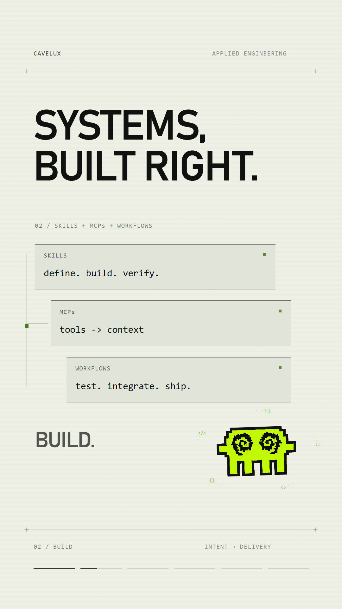
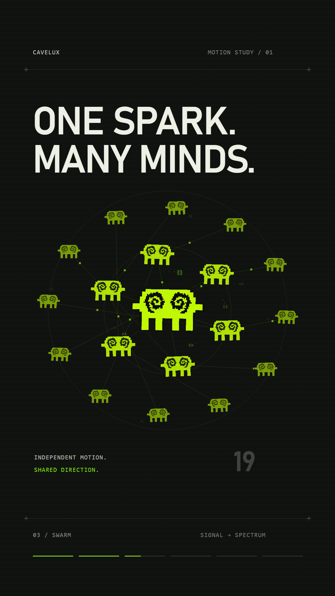
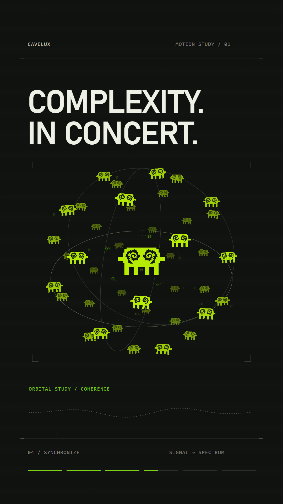
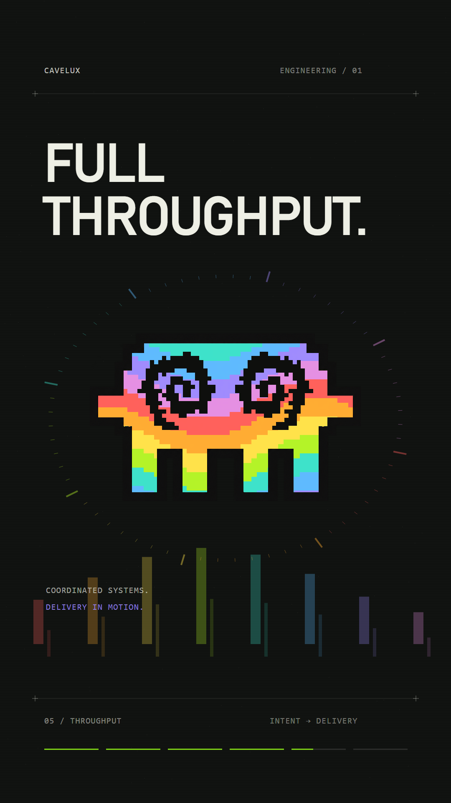
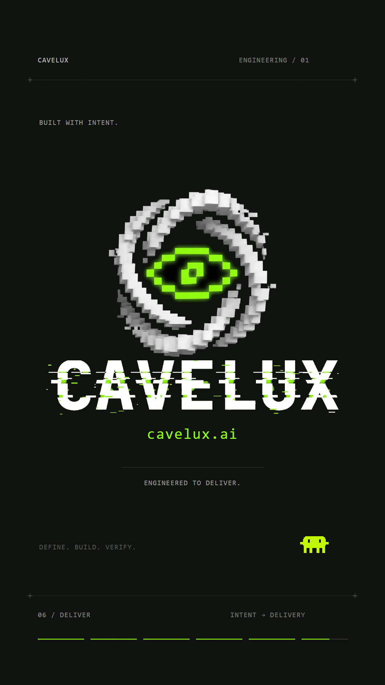
04 / Original sound
FINAL MIX / 45 SECONDS
MUSIC STEM
SOUND EFFECTS STEM
Vertical cover · Storyboard and art direction · 45-second film